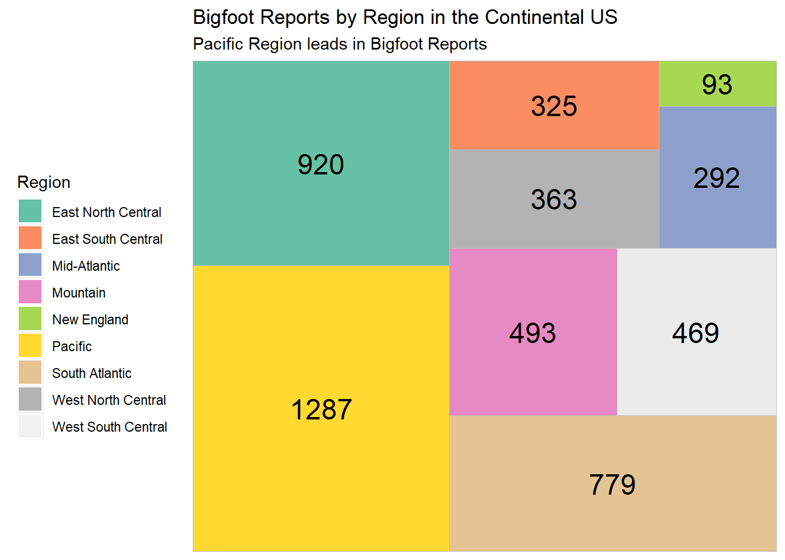
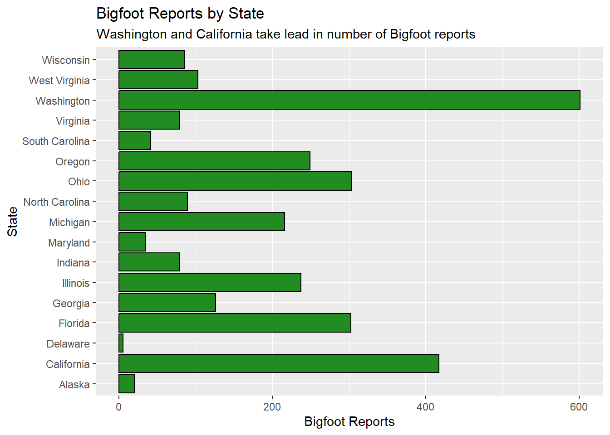
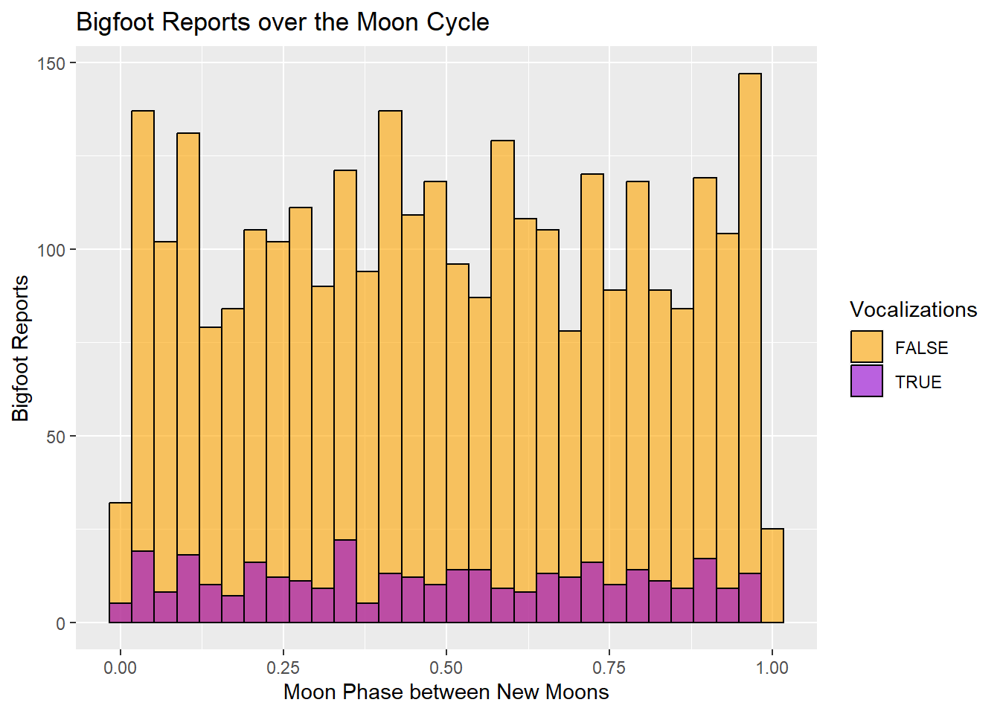
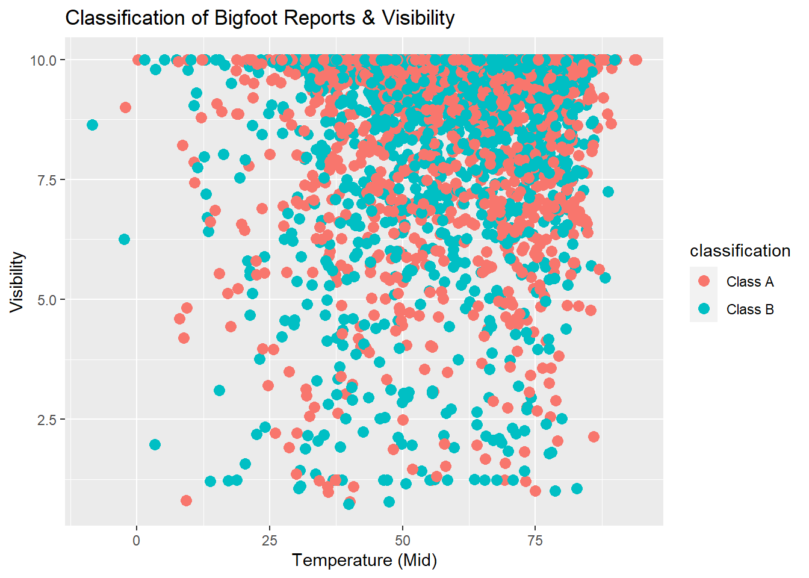
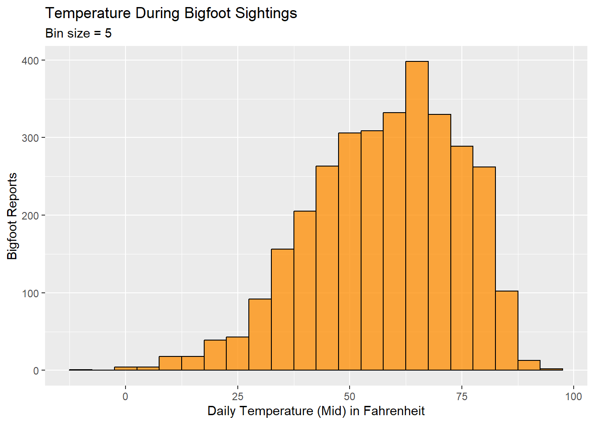

library(tidyverse)
knitr::opts_chunk$set(echo = TRUE, warning=FALSE, message=FALSE)Final Project Assignment 2: Teresa Lardo
final_Project
final_project_data_visualizations
Teresa Lardo
Bigfoot Reports
Exploratory analysis and visualizations
Load In Dataset
library(readr)
library(dplyr)
bfro <- read_csv("TeresaLardo_FinalProjectData/bfro_reports_geocoded.csv", col_types = cols(number = col_skip()))
# Rearrange order of rows for my personal sanity
bfro <- bfro %>%
select(index, date, title, state, county, classification, everything())
# Creating separate vectors for each region
Pacific <- c("California", "Oregon", "Washington", "Alaska")
Mountain <- c("Nevada", "Arizona", "New Mexico", "Colorado", "Utah", "Idaho", "Montana", "Wyoming")
West_North_Central <- c("Minnesota", "North Dakota", "South Dakota", "Iowa", "Nebraska", "Kansas", "Missouri")
West_South_Central <- c("Texas", "Oklahoma", "Louisiana", "Arkansas")
East_North_Central <- c("Ohio", "Wisconsin", "Michigan", "Illinois", "Indiana")
East_South_Central <- c("Alabama", "Kentucky", "Tennessee", "Mississippi")
South_Atlantic <- c("Florida", "Georgia", "South Carolina", "North Carolina", "Virginia", "West Virginia", "Maryland", "Delaware")
Mid_Atlantic <- c("Pennsylvania", "New York", "New Jersey")
New_England <- c("Connecticut", "Rhode Island", "Massachusetts", 'Vermont', "New Hampshire", "Maine")
# Mutating new column using the vectors above
bfro <- bfro %>%
mutate(
region = case_when(state %in% Pacific ~ "Pacific",
state %in% Mountain ~ "Mountain",
state %in% West_North_Central ~ "West North Central",
state %in% West_South_Central ~ "West South Central",
state %in% East_North_Central ~ "East North Central",
state %in% East_South_Central ~ "East South Central",
state %in% South_Atlantic ~ "South Atlantic",
state %in% Mid_Atlantic ~ "Mid-Atlantic",
state %in% New_England ~ "New England"),
vocalizations = str_detect(title, "vocalization")
)I’ve read in the CSV for the dataset on Bigfoot reports, rearranged some of the columns to make it easier for me to work with, created a new column sorting the reports into larger regions within the continental United States, and created a column to note whether or not a report includes vocalizations.
The report data comes from The Bigfoot Field Researchers Organization, or BFRO, and supplemental data on weather and environmental conditions were added from Dark Sky API. The geocoded and weather-enhanced data set I’m using comes courtesy of Tim Renner.
Visualizations
Create Tree Map for the Regions
# Package
library(treemapify)
library(RColorBrewer)
# Plot
ggplot(bfro %>%
count(region),
aes(fill = region,
area = n,
label = n)) +
geom_treemap() +
geom_treemap_text(colour = "black",
place = "centre") +
labs(title = "Bigfoot Reports by Region in the Continental US",
subtitle = "Pacific Region leads in Bigfoot Reports",
fill = "Region") +
theme(legend.position = "left") +
scale_fill_brewer(palette = "Set2")
The treemap shows that the top 3 regions for Bigfoot sightings are the Pacific (California, Oregon, Washington, Alaska), East North Central (Ohio, Wisconsin, Michigan, Illinois, Indiana), and the South Atlantic (Florida, Georgia, South Carolina, North Carolina, Virginia, West Virginia, Maryland, Delaware). That’s still quite a lot of states. I’d like to zoom in on these 3 regions and see which individual states lead in the number of Bigfoot reports in our dataset.
Bigfoot Reports per State in the Top 3 Regions
ggplot(bfro %>%
filter(region=="Pacific" | region=="East North Central" | region=="South Atlantic") %>%
count(state), aes(x = state, y = n)) +
geom_bar(stat='identity', color="black", fill="forestgreen") +
labs(x = "State", y = "Bigfoot Reports", title = "Bigfoot Reports by State", subtitle = "Washington and California take lead in number of Bigfoot reports") +
scale_fill_brewer(palette = "Set1") +
coord_flip()
The bar chart above shows that Washington has a dramatic lead over the rest of the states in the top 3 regions, and California comes in second. These are both states within the Pacific region.
Create a Time-Sensitive Dataset
In order to create any visualizations related to weather conditions, we need to work with reports that have specific dates. Since I intend to create multiple visualizations that depend on that data, I’ll create a version of the dataset that contains no NA values for ‘date.’
bfro_timed <- bfro %>%
drop_na(date)Moon Phase Correspondence
The Moon Phase variable extends from 0 to 1, describing the point in the moon’s cycle from new moon to new moon. So a value of 0 denotes a new moon, a value of 0.25 denotes a waxing half moon, 0.5 denotes a full moon, 0.75 denotes a waning half moon, and values closely approaching 1 denote a balsamic moon, leading into the next new moon.
To explore the question of moon phase correspondence, I can create a basic histogram. I want to see if reports that feature vocalizations are any different in this regard compared to reports without vocalizations, so we’ll distinguish the two types of reports by color.
ggplot(bfro_timed, aes(x=moon_phase, fill=vocalizations)) +
geom_histogram(color='black', alpha=0.6, position = 'identity') +
scale_fill_manual(values=c("orange", "darkviolet")) +
labs(fill="Vocalizations", y = "Bigfoot Reports", x = "Moon Phase between New Moons") +
ggtitle("Bigfoot Reports over the Moon Cycle") 
The histogram does not indicate any particularly dramatic increase in Bigfoot reports over the course of the moon cycle. The periods just before and just after a new moon seem to be popular times for Bigfoot sightings, whereas the times when the moon is actually dark have a dramatic drop in sightings.
The vocalization reports seem to hold fairly stable during the waning phase of the moon and show more fluctuation during the waxing phase.
Visibility for Class A & B Reports
The dataset includes a classification variable describing each report as Class A, B, or C. These Class ratings correspond to the potential for misinterpretation of what has been observed. Class A denotes a very low potential for misinterpretation, and Class B denotes a greater potential for misinterpretation (such as sounds heard but no clear view of a creature). Class C has the highest potential for inaccuracy and is the default classification for second-hand reports, so I’m going to eliminate those reports.
I want to see if the visibility on the day of the sighting has a notable correlation with the classification of the report. I would assume a report is more likely to be Class B on days with lower visibility. Let’s pair the visibility with the midpoint temperature to see if there’s any relationship with temperature as well.
On the visibility scale, 1 denotes dense fog, 5 denotes thin fog, 8 denotes clear, and 10 denotes exceptionally clear.
ggplot(bfro_timed %>%
filter(classification == "Class A" | classification == "Class B"), aes(x=temperature_mid, y=visibility, color=classification)) +
geom_point(size=3) +
scale_fill_manual(values=c("orange", "darkviolet")) +
labs(fill="Classification", y = "Visibility", x = "Temperature (Mid)") +
ggtitle("Classification of Bigfoot Reports & Visibility") 
This scatterplot shows us that an overwhelming amount of both Class A and Class B reports described sightings that occurred during days with high visibility.
Considering the points that fall under Visibility 5, the Class B reports do seem to dominate slightly over the Class A reports.
Temperature
I’d like to make a histogram to see where reports tend to fall in terms of daily temperature. The dataset includes high and low temperatures, but also a midpoint temperature. I am opting to use the temperature_mid variable.
ggplot(bfro_timed, aes(x=temperature_mid)) +
geom_histogram(binwidth=5, color="black", fill="darkorange", alpha=0.75, position='identity') +
labs(title = "Temperature During Bigfoot Sightings", x = "Daily Temperature (Mid) in Fahrenheit", y = "Bigfoot Reports", subtitle = "Bin size = 5") 
The histogram shows that our Bigfoot reports spike when the temperature is in the low-to-mid 60s. The temperatures associated with the majority of the reports will, of course, also correspond to temperatures that people are more likely to be out and about in nature.